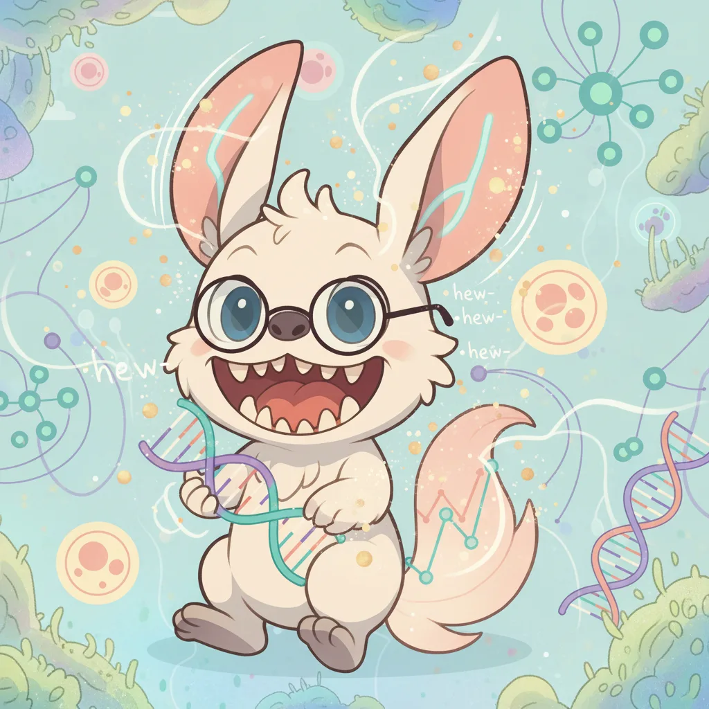
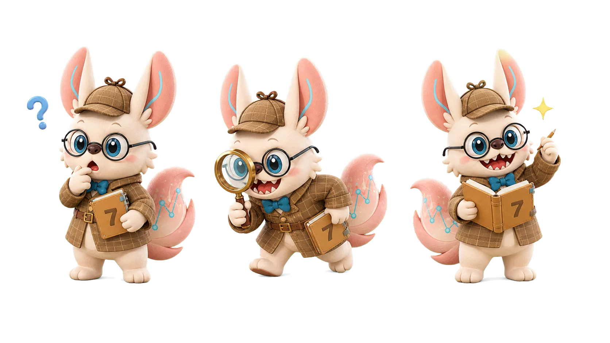
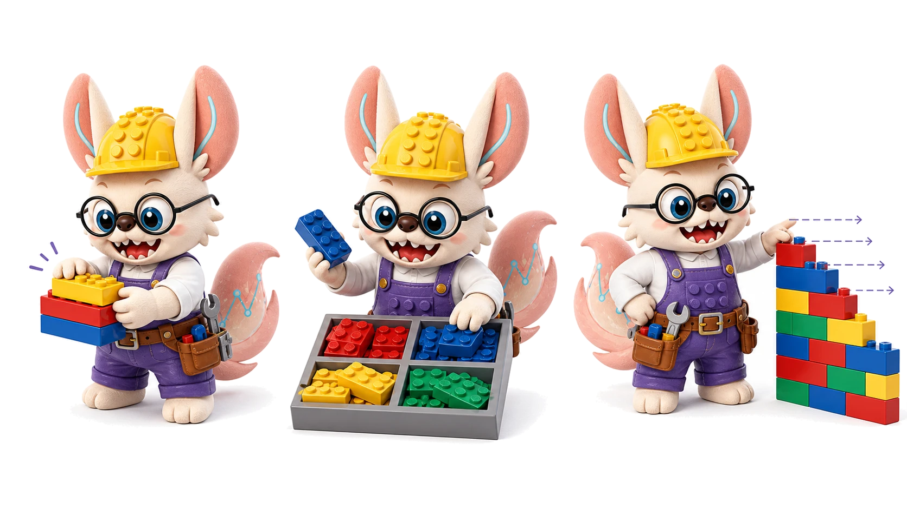
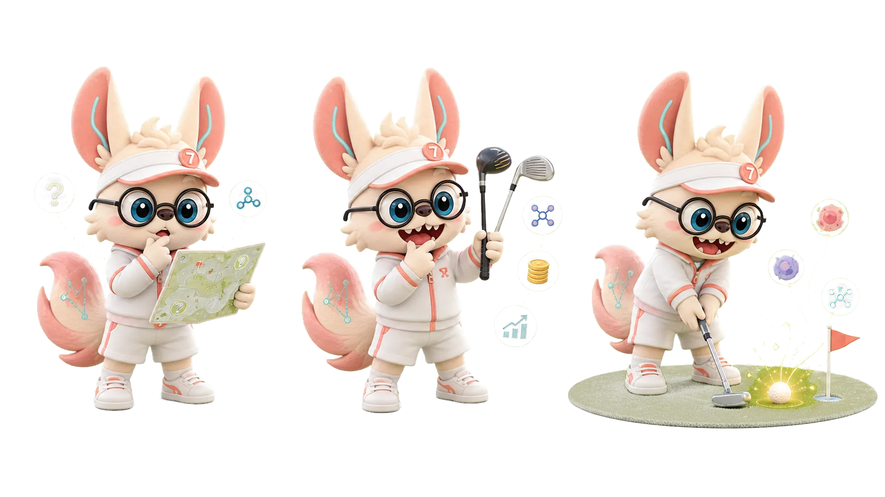
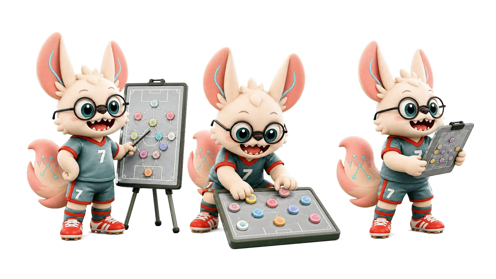
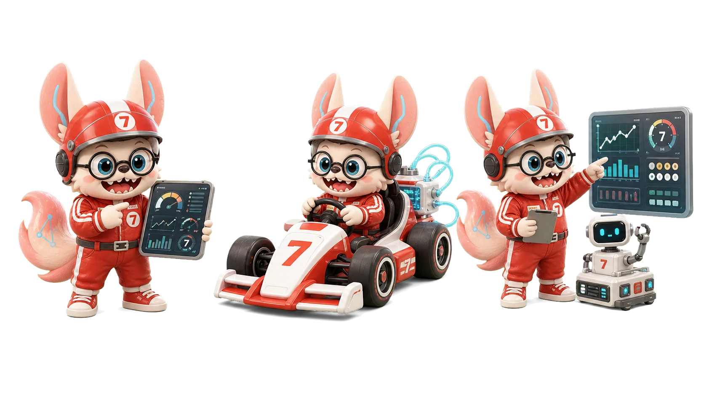
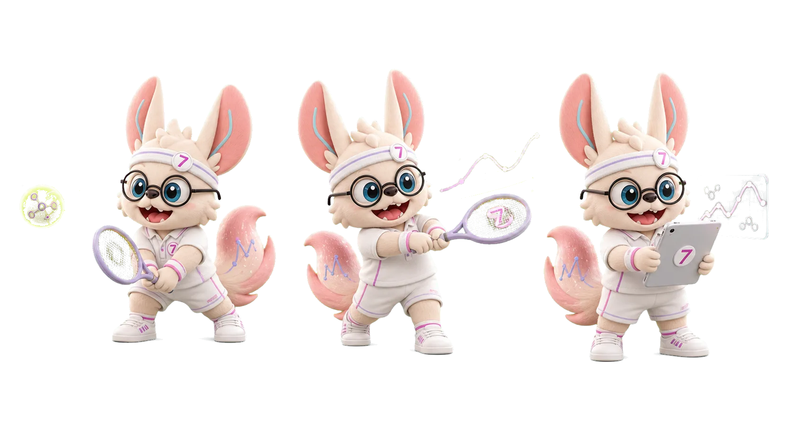
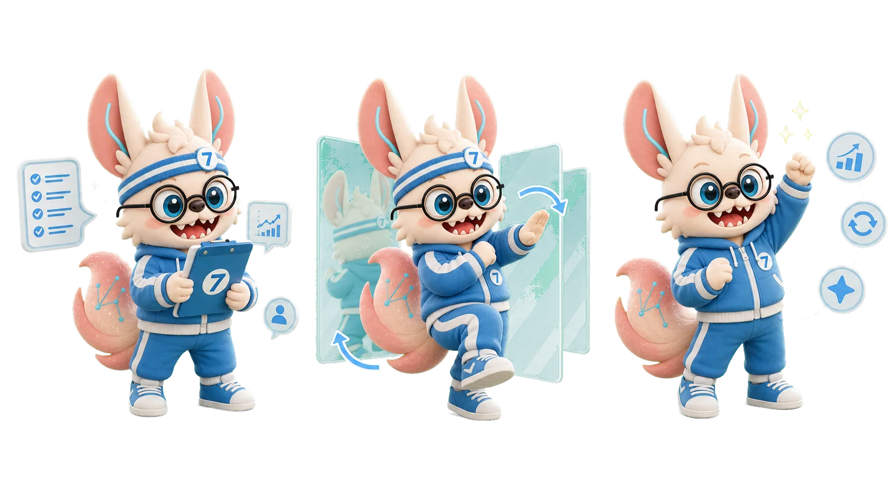

Lab in the Loop.
This page turns the AI4Bio loop into a guided tour: Measure → Model → Experiment → Update. Each stage explains a core concept through a familiar analogy — detective fiction, LEGO builds, sports, and pop culture — so the science is easier to browse, remember, and extend. Your guide is Healshu, an ear-rat spirit out of the Classic of Mountains and Seas, and it chirps “hew hew!” whenever the loop turns up a new discovery.
MEASURE → MODEL → DESIGN → COORDINATE → MONITOR → READOUT → UPDATE

The same scientific loop, explained through things you already know.
This guide breaks lab-in-the-loop into seven vivid roles: detective work for observation, strategy for modeling, golf for experiment choice, football for system coordination, F1 for execution monitoring, tennis for reading experimental feedback, and the K-pop training system for continuous iteration. Each analogy turns an abstract stage into something you can picture.
Measure.
Handle biological data like an Agatha Christie case file: every sample, outlier, and batch effect may be a real clue or a red herring, and nothing is concluded before the evidence holds up.

Separate clues from red herrings.
This is the Measure stage of the lab loop: archive the clues, identify reliable witnesses, remove dramatic but misleading red herrings, and admit only a trustworthy chain of evidence into the model.
Model.
Like a LEGO build, modeling starts with the parts list before snapping anything: which pieces exist, in what order, and what each connection will hold.

Sort the bricks before the build.
This is the Model stage of the lab loop: understand the structure, variables, and causal constraints of the biological system before the next experiment. From tokens to attention, from trajectories to causal inference, each method assembles the parts list before the next brick.
Design.
Golf maps to experimental design: read the terrain, control risk, and choose the right club for the shot that matters.

Choose the next shot.
This is the Design stage of the lab loop: turn model output into the next experimental choice while balancing uncertainty, cost, risk, and information value.
Coordinate.
Football maps to experimental coordination: eleven players, one formation — every pass only works because each position and role has context.

Set the formation.
This is the Coordinate stage of the lab loop: organize different experimental components into an executable system where every data modality, spatial position, and cell role has context.
Monitor.
F1 maps to execution monitoring: sensors, telemetry, and pit strategy — races are won or lost in the middle of the run, not at the flag.

Track the run in real time.
This is the Monitor stage of the lab loop: experiments are not only evaluated at the end; provenance, metadata, quality metrics, and anomalies are recorded throughout execution.
Readout.
Tennis maps to experimental readout: the serve is only the beginning — the point is decided by how you read the return.

Read the return.
This is the Readout stage of the lab loop: the model proposes an intervention and the experiment responds. The key is not simply that an experiment was run, but that the gap between prediction and response becomes readable.
Update.
Like a K-pop training system, every round of feedback enters the next round of practice: perform, find the mismatch, make a small correction, rehearse again.

Improve through feedback.
This is the Update stage of the lab loop: experimental results act like rehearsal notes, turning mismatch into model revision and a sharper next question.